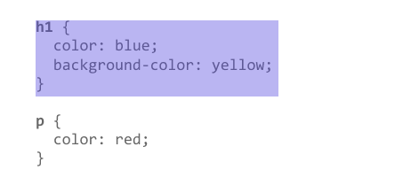

CSS (Cascading Style Sheets) allows you to create great-looking web pages, but how does it work under the hood? This article explains what CSS is, with a simple syntax example, and also covers some key terms about the language.
As we have mentioned before, CSS is a language for specifying how documents are presented to users — how they are styled, laid out, etc.
A document is usually a text file structured using a markup language — HTML is the most common markup language, but you may also come across other markup languages such as SVG or XML.
CSS can be used for very basic document text styling — for example changing the color and size of headings and links. It can be used to create layout — for example turning a single column of text into a layout with a main content area and a sidebar for related information. It can even be used for effects such as animation. Have a look at the links in this paragraph for specific examples.
CSS is a rule-based language — you define rules specifying groups of styles that should be applied to particular elements or groups of elements on your web page. For example "I want the main heading on my page to be shown as large red text."
The following code shows a very simple CSS rule that would achieve the styling described above:
h1 {
color: red;
font-size: 5em;
}
The rule opens with a selector . This selects the HTML element that we are going to style. In this case
we are styling level one headings <h1>
We then have a set of curly braces { }. Inside those will be one or more declarations, which take the form of property and value pairs. Each pair specifies a property of the element(s) we are selecting, then a value that we'd like to give the property.
Before the colon, we have the property, and after the colon, the value. CSS properties have different allowable values, depending on which property is being specified. In our example, we have the color property, which can take various color values. We also have the font-size property. This property can take various size units as a value.
A CSS stylesheet will contain many such rules, written one after the other.
h1 {
color: red;
font-size: 5em;
}
p {
color: black;
}
You will find that you quickly learn some values, whereas others you will need to look up. The individual property pages on MDN give you a quick way to look up properties and their values when you forget, or want to know what else you can use as a value.
In this article we will take a simple HTML document and apply CSS to it, learning some practical things about the language along the way.
- Prerequisites: Basic computer literacy, basic software installed, basic knowledge of working with files, and HTML basics (study Introduction to HTML.)
- Objective: To understand the basics of linking a CSS document to an HTML file, and be able to do simple text formatting with CSS.
Our starting point is an HTML document. You can copy the code from below if you want to work on your own computer. Save the code below as index.html in a folder on your machine.
<!doctype html>
<html lang="en">
<head>
<meta charset="utf-8">
<title>Getting started with CSS</title>
</head >
<body>
<h1>I am a level one heading</h1>
<p>This is a paragraph of text. In the text is a<span>span element</span>
and also a<a href="http://example.com">link</a>.</p>
<p>This is the second paragraph. It contains an<em>emphasized</em> element.</p>
<ul>
<li>Item one</li>
<li>Item two</li>
<li>Item<em>three</em></li>
</ul>
</body>
</html>
The very first thing we need to do is to tell the HTML document that we have some CSS rules we want it to use. There are three different ways to apply CSS to an HTML document that you'll commonly come across, however, for now, we will look at the most usual and useful way of doing so — linking CSS from the head of your document.
Create a file in the same folder as your HTML document and save it as styles.css. The .css extension shows that this is a CSS file.
To link styles.css to index.html add the following line somewhere inside the
of the HTML document:
<link rel="stylesheet" href="styles.css">
This <link> element tells the browser that we have a stylesheet, using the rel attribute, and the location of that stylesheet as the value of the href attribute. You can test that the CSS works by adding a rule to styles.css. Using your code editor add the following to your CSS file:
h1 {
color: red;
}
Save your HTML and CSS files and reload the page in a web browser. The level one heading at the top of the document should now be red. If that happens, congratulations — you have successfully applied some CSS to an HTML document. If that doesn't happen, carefully check that you've typed everything correctly.
You can continue to work in styles.css locally, or you can use our interactive editor below to continue with this tutorial. The interactive editor acts as if the CSS in the first panel is linked to the HTML document, just as we have with our document above.
Now that you have an idea about what CSS is and the basics of using it, it is time to look a little deeper into the structure of the language itself. We have already met many of the concepts discussed here; you can return to this one to recap if you find any later concepts confusing.
- Prerequisites: Basic computer literacy, basic software installed, basic knowledge of working with files, HTML basics (study Introduction to HTML), and an idea of How CSS works.
- Objective: To learn CSS's fundamental syntax structures in detail.
The first thing we will look at are the three methods of applying CSS to a document.
- External stylesheet
- Internal stylesheet
- Inline styles
In the Getting started with CSS we linked an external stylesheet to our page. This is the most common and useful method of attaching CSS to a document as you can link the CSS to multiple pages, allowing you to style them all with the same stylesheet. In most cases, the different pages of a site will all look pretty much the same, therefore you can use the same set of rules for the basic look and feel.
An external stylesheet is when you have your CSS written in a separate file with a .css extension, and you reference it from an HTML <link> element:
<!DOCTYPE html>
<html>
<head>
<meta charset="utf-8">
<title>My CSS experiment</title>
<link rel="stylesheet" href="styles.css">
</head>
<body>
<h1>Hello World!</h1>
<p>This is my first CSS example</p>
</body>
</html>
The CSS file might look something like this:
h1 {
color: blue;
background-color: yellow;
border: 1px solid black;
}
p {
color: red;
}
The href attribute of the <link> element needs to reference a file on your filesystem.
In the example above, the CSS file is in the same folder as the HTML document, but you could place it somewhere else and adjust the specified path to suit, for example:
<!-- Inside a subdirectory called styles inside the current directory -->
<link rel="stylesheet" href="styles/style.css">
<!-- Inside a subdirectory called general, which is in a subdirectory called styles, inside the current directory -->
<link rel="stylesheet" href="styles/general/style.css">
<!-- Go up one directory level, then inside a subdirectory called styles -->
<link rel="stylesheet" href="../styles/style.css">
An internal stylesheet is where you don't have an external CSS file, but instead place your CSS inside a <style> element contained inside the HTML <head>. <br>So the HTML would look like this:
<!DOCTYPE html>
<html>
<head>
<meta charset="utf-8">
<title>My CSS experiment</title>
<style>
h1 {
color: blue;
background-color: yellow;
border: 1px solid black;
}
p {
color: red;
}
</style>
</head>
<body>
<h1>Hello World!</h1>
<p>This is my first CSS example</p>
</body>
</html>
This can be useful in some circumstances (maybe you're working with a content management system where you can't modify the CSS files directly), but it isn't quite as efficient as external stylesheets — in a website, the CSS would need to be repeated across every page, and updated in multiple places if changes were required.
Inline styles are CSS declarations that affect one element only, contained within a style attribute:
<!DOCTYPE html>
<html>
<head>
<meta charset="utf-8">
<title>My CSS experiment</title>
</head>
<body>
<h1 style="color: blue;background-color: yellow;border: 1px solid black;">Hello World!</h1>
<p style="color:red;">This is my first CSS example</p>
</body>
</html>
Please don't do this, unless you really have to! for three reason
- It is really bad for maintenance (you might have to update the same information multiple times per document)
- it also mixes your presentational CSS information with your HTML structural information, making the code harder to read and understand
- Keeping different types of code separated makes for a much easier job for all who work on the code.
At its most basic level, CSS consists of two building blocks:
- Properties: Human-readable identifiers that indicate which stylistic features (e.g. font-size, width, background-color) you want to change.
- Values: Each specified property is given a value, which indicates how you want to change those stylistic features (e.g. what you want to change the font, width or background color to.)
The below image highlights a single property and value. The property name is color, and the value blue.

A property paired with a value is called a CSS declaration. CSS declarations are put within CSS Declaration Blocks. This next image shows our CSS with the declaration block highlighted.

Finally, CSS declaration blocks are paired with selectors to produce CSS Rulesets (or CSS Rules). Our image contains two rules, one for the h1 selector and one for the p selector. The rule for h1 is highlighted.
Try looking up different values of the following properties, and writing CSS rules that apply them to different HTML elements:
- font-size
- width
- background-color
- color
- border
- All the documentation in this is page is taken from MDN